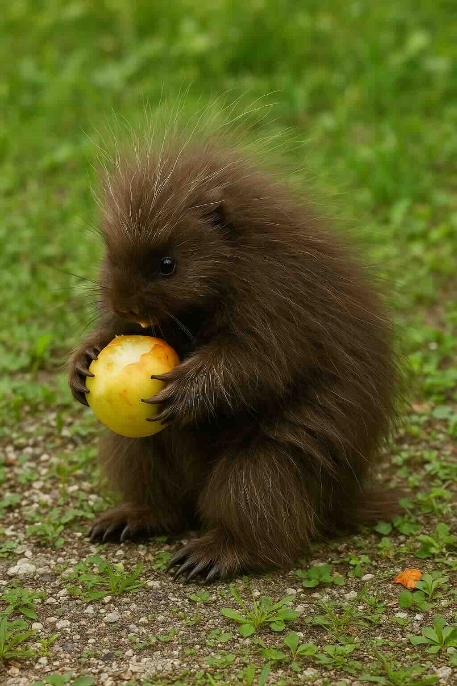

How Animals Need Food to Survive
What Do Animals Need?
All animals need food and water to survive. Without food, animals cannot live and grow. Different animals eat different kinds of foods. Some animals eat plants, some eat other animals, and some eat both! Animals get their food from their environment.
Fun Fact: Just like you feel hungry when you need to eat, animals feel hunger too! Hunger is a feeling you get when your body needs food.
Animals That Eat Plants
Some animals only eat plants or things that grow on plants. These animals are called herbivores.

A porcupine eating fruit
Porcupines are herbivores. They eat:
- Leaves from trees and bushes
- Bark from tree trunks
- Berries that grow on plants
Porcupines have special features that help them get their food:
- Sharp claws that help them climb trees to reach leaves and bark
- Strong, sharp teeth to strip bark from trees
A porcupine using its sharp claws to climb and access food
Let's Think: If a porcupine didn't have sharp claws, how would this affect its ability to find food?
Animals That Eat Other Animals
Some animals eat other animals to survive. These animals are called carnivores.
Wolves are carnivores. They eat:
- Rabbits
- Deer
- Sometimes sheep
Wolves have special ways to help them catch their food:
- They hunt in groups called packs, which makes catching prey easier
- They have excellent senses of smell and sight to find prey
- They have sharp teeth for tearing meat
Fun Fact: When wolves hunt together, they can catch animals much larger than themselves!
How Animals Use Their Senses to Find Food
Animals use their senses like smell, sight, hearing, taste, and touch to help them find food.
A Savannah monitor using its tongue to smell for food
The Savannah Monitor is a special type of lizard that:
- Uses its tongue to smell for food
- Can figure out which direction food is located by using its tongue
- Eats insects to survive
Frogs mainly eat bugs too, but they use:
- Their excellent eyesight to spot moving insects
- A sticky tongue that shoots out quickly to catch bugs
Try This: Close your eyes and try to identify a food just by smelling it. This is similar to how some animals find their food!
Special Tools and Techniques
Some animals have special ways to get their food.
Monkeys are clever animals that:
- Bang nuts on hard surfaces to crack them open
- Use their hands to pull apart nuts after cracking them
- Sometimes use tools like stones to smash nuts open
Fun Fact: Using tools to get food is a sign of intelligence in animals. Humans use tools too—like forks and spoons!
Predators and Prey
In nature, there is a special relationship between animals that hunt and animals that get hunted.
- Predators are animals that hunt other animals for food (like wolves)
- Prey are animals that get hunted by other animals (like rabbits)
This relationship is important in nature and helps keep animal populations balanced.
Think About It: If a wolf is a predator, what animals would be its prey?
People Need Food Too!
Just like animals, people need food to live and grow. Most people eat food three times a day:
- Breakfast in the morning
- Lunch in the middle of the day
- Dinner in the evening
People eat many different foods like pizza
People eat many different things like:
- Fruits and vegetables that come from plants
- Nuts and seeds from plants
- Meat that comes from animals
- Foods made from both plants and animals
Think About: What did you eat today? Did it come from plants, animals, or both?
Important Words to Know
Food: What living things eat. They need it to live and grow.
Hunger: A feeling you get when you need food.
Survive: To stay alive.
Prey: An animal that is hunted by another animal.
Predator: An animal that hunts another animal.
Meat: The flesh of an animal used for food.
Herbivore: An animal that only eats plants.
Carnivore: An animal that eats other animals.
Omnivore: An animal that eats both plants and animals.
Let's Review What We Learned
- All animals need food and water to survive and grow
- Different animals eat different kinds of food
- Some animals like porcupines eat plants (herbivores)
- Some animals like wolves eat other animals (carnivores)
- Animals have special features that help them find and eat food
- Animals use their senses like smell and sight to find food
- Predators hunt prey for food
- People, just like animals, need food to live and grow
Check Your Understanding
- Why do animals need food?
- Name three things a porcupine eats.
- How does a Savannah monitor find its food?
- What special features help a porcupine get food?
- What does a wolf eat?
- How do wolves catch their food?
- What is a predator? What is prey?
- How does a monkey get a nut out of its shell?
- Where do animals get their food from?
- Name three things people eat.
Fun Activities to Try
- Draw an Animal: Draw a picture of an animal and what it eats. Include the special features that help it get food.
- Act It Out: Pretend to be different animals finding their food. How would a wolf hunt? How would a porcupine climb a tree?
- Food Sorting: Make a list of foods and sort them into two groups: foods that come from plants and foods that come from animals.
- Animal Features Match: Match different animal features (like sharp teeth, long tongue, strong claws) with how they help the animal get food.